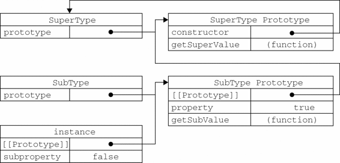
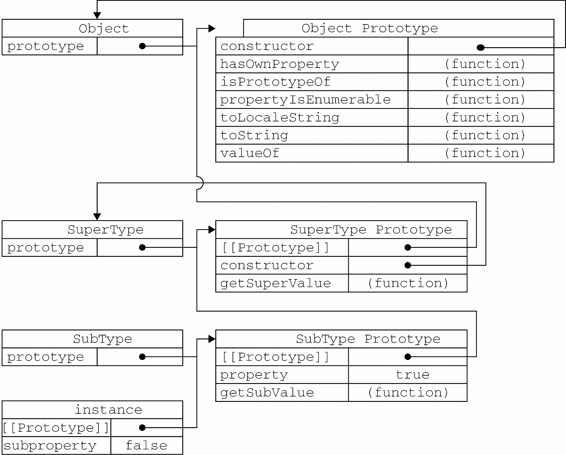
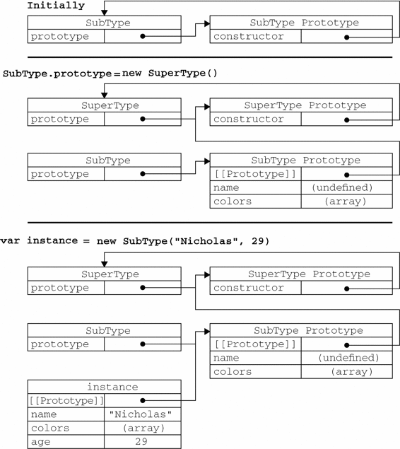

继承是OO语言中的一个最为人津津乐道的概念。许多OO语言都支持两种继承方式：接口继承和实现继承。接口继承只继承方法签名，而实现继承则继承实际的方法。如前所述，由于函数没有签名，在ECMAScript中无法实现接口继承。ECMAScript只支持实现继承，而且其实现继承主要是依靠原型链来实现的。
ECMAScript中描述了原型链的概念，并将原型链作为实现继承的主要方法。其基本思想是利用原型让一个引用类型继承另一个引用类型的属性和方法。简单回顾一下构造函数、原型和实例的关系：每个构造函数都有一个原型对象，原型对象都包含一个指向构造函数的指针，而实例都包含一个指向原型对象的内部指针。那么，假如我们让原型对象等于另一个类型的实例，结果会怎么样呢？显然，此时的原型对象将包含一个指向另一个原型的指针，相应地，另一个原型中也包含着一个指向另一个构造函数的指针。假如另一个原型又是另一个类型的实例，那么上述关系依然成立，如此层层递进，就构成了实例与原型的链条。这就是所谓原型链的基本概念。
实现原型链有一种基本模式，其代码大致如下。
function SuperType(){
this.property = true;
}
SuperType.prototype.getSuperValue = function(){
return this.property;
};
function SubType(){
this.subproperty = false;
}
//继承了SuperType
SubType.prototype = new SuperType();
SubType.prototype.getSubValue = function (){
return this.subproperty;
};
var instance = new SubType();
alert(instance.getSuperValue()); //true
PrototypeChainingExample01.htm
以上代码定义了两个类型：SuperType和SubType。每个类型分别有一个属性和一个方法。它们的主要区别是SubType继承了SuperType，而继承是通过创建SuperType的实例，并将该实例赋给SubType.prototype实现的。实现的本质是重写原型对象，代之以一个新类型的实例。换句话说，原来存在于SuperType的实例中的所有属性和方法，现在也存在于SubType.prototype中了。在确立了继承关系之后，我们给SubType.prototype添加了一个方法，这样就在继承了SuperType的属性和方法的基础上又添加了一个新方法。这个例子中的实例以及构造函数和原型之间的关系如图6-4所示。

图 6-4
在上面的代码中，我们没有使用SubType默认提供的原型，而是给它换了一个新原型；这个新原型就是SuperType的实例。于是，新原型不仅具有作为一个SuperType的实例所拥有的全部属性和方法，而且其内部还有一个指针，指向了SuperType的原型。最终结果就是这样的：instance指向SubType的原型，SubType的原型又指向SuperType的原型。getSuperValue()方法仍然还在SuperType.prototype中，但property则位于SubType.prototype中。这是因为property是一个实例属性，而getSuperValue()则是一个原型方法。既然SubType.prototype现在是SuperType的实例，那么property当然就位于该实例中了。此外，要注意instance.constructor现在指向的是SuperType，这是因为原来SubType.prototype中的constructor被重写了的缘故1。
1 实际上，不是
SubType的原型的constructor属性被重写了，而是SubType的原型指向了另一个对象——SuperType的原型，而这个原型对象的constructor属性指向的是SuperType。
通过实现原型链，本质上扩展了本章前面介绍的原型搜索机制。读者大概还记得，当以读取模式访问一个实例属性时，首先会在实例中搜索该属性。如果没有找到该属性，则会继续搜索实例的原型。在通过原型链实现继承的情况下，搜索过程就得以沿着原型链继续向上。就拿上面的例子来说，调用instance.getSuperValue()会经历三个搜索步骤：1）搜索实例；2）搜索SubType.prototype；3）搜索SuperType.prototype，最后一步才会找到该方法。在找不到属性或方法的情况下，搜索过程总是要一环一环地前行到原型链末端才会停下来。
1. 别忘记默认的原型
事实上，前面例子中展示的原型链还少一环。我们知道，所有引用类型默认都继承了Object，而这个继承也是通过原型链实现的。大家要记住，所有函数的默认原型都是Object的实例，因此默认原型都会包含一个内部指针，指向Object.prototype。这也正是所有自定义类型都会继承toString()、valueOf()等默认方法的根本原因。所以，我们说上面例子展示的原型链中还应该包括另外一个继承层次。图6-5为我们展示了该例子中完整的原型链。

图 6-5
一句话，SubType继承了SuperType，而SuperType了继承Object。当调用instance.toString()时，实际上调用的是保存在Object.prototype中的那个方法。
2. 确定原型和实例的关系
可以通过两种方式来确定原型和实例之间的关系。第一种方式是使用instanceof操作符，只要用这个操作符来测试实例与原型链中出现过的构造函数，结果就会返回true。以下几行代码就说明了这一点。
alert(instance instanceof Object); //true
alert(instance instanceof SuperType); //true
alert(instance instanceof SubType); //true
PrototypeChainingExample01.htm
由于原型链的关系，我们可以说instance是Object、SuperType或SubType中任何一个类型的实例。因此，测试这三个构造函数的结果都返回了true。
第二种方式是使用isPrototypeOf()方法。同样，只要是原型链中出现过的原型，都可以说是该原型链所派生的实例的原型，因此isPrototypeOf()方法也会返回true，如下所示。
alert(Object.prototype.isPrototypeOf(instance)); //true
alert(SuperType.prototype.isPrototypeOf(instance)); //true
alert(SubType.prototype.isPrototypeOf(instance)); //true
PrototypeChainingExample01.htm
3. 谨慎地定义方法
子类型有时候需要重写超类型中的某个方法，或者需要添加超类型中不存在的某个方法。但不管怎样，给原型添加方法的代码一定要放在替换原型的语句之后。来看下面的例子。
function SuperType(){
this.property = true;
}
SuperType.prototype.getSuperValue = function(){
return this.property;
};
function SubType(){
this.subproperty = false;
}
//继承了SuperType
SubType.prototype = new SuperType();
//添加新方法
SubType.prototype.getSubValue = function (){
return this.subproperty;
};
//重写超类型中的方法
SubType.prototype.getSuperValue = function (){
return false;
};
var instance = new SubType();
alert(instance.getSuperValue()); //false
PrototypeChainingExample02.htm
在以上代码中，加粗的部分是两个方法的定义。第一个方法getSubValue()被添加到了SubType中。第二个方法getSuperValue()是原型链中已经存在的一个方法，但重写这个方法将会屏蔽原来的那个方法。换句话说，当通过SubType的实例调用getSuperValue()时，调用的就是这个重新定义的方法；但通过SuperType的实例调用getSuperValue()时，还会继续调用原来的那个方法。这里要格外注意的是，必须在用SuperType的实例替换原型之后，再定义这两个方法。
还有一点需要提醒读者，即在通过原型链实现继承时，不能使用对象字面量创建原型方法。因为这样做就会重写原型链，如下面的例子所示。
function SuperType(){
this.property = true;
}
SuperType.prototype.getSuperValue = function(){
return this.property;
};
function SubType(){
this.subproperty = false;
}
//继承了SuperType
SubType.prototype = new SuperType();
//使用字面量添加新方法，会导致上一行代码无效
SubType.prototype = {
getSubValue : function (){
return this.subproperty;
},
someOtherMethod : function (){
return false;
}
};
var instance = new SubType();
alert(instance.getSuperValue()); //error!
PrototypeChainingExample03.htm
以上代码展示了刚刚把SuperType的实例赋值给原型，紧接着又将原型替换成一个对象字面量而导致的问题。由于现在的原型包含的是一个Object的实例，而非SuperType的实例，因此我们设想中的原型链已经被切断——SubType和SuperType之间已经没有关系了。
4. 原型链的问题
原型链虽然很强大，可以用它来实现继承，但它也存在一些问题。其中，最主要的问题来自包含引用类型值的原型。想必大家还记得，我们前面介绍过包含引用类型值的原型属性会被所有实例共享；而这也正是为什么要在构造函数中，而不是在原型对象中定义属性的原因。在通过原型来实现继承时，原型实际上会变成另一个类型的实例。于是，原先的实例属性也就顺理成章地变成了现在的原型属性了。下列代码可以用来说明这个问题。
function SuperType(){
this.colors = ["red", "blue", "green"];
}
function SubType(){
}
//继承了SuperType
SubType.prototype = new SuperType();
var instance1 = new SubType();
instance1.colors.push("black");
alert(instance1.colors); //"red,blue,green,black"
var instance2 = new SubType();
alert(instance2.colors); //"red,blue,green,black"
PrototypeChainingExample04.htm
这个例子中的SuperType构造函数定义了一个colors属性，该属性包含一个数组（引用类型值）。SuperType的每个实例都会有各自包含自己数组的colors属性。当SubType通过原型链继承了SuperType之后，SubType.prototype就变成了SuperType的一个实例，因此它也拥有了一个它自己的colors属性——就跟专门创建了一个SubType.prototype.colors属性一样。但结果是什么呢？结果是SubType的所有实例都会共享这一个colors属性。而我们对instance1.colors的修改能够通过instance2.colors反映出来，就已经充分证实了这一点。
原型链的第二个问题是：在创建子类型的实例时，不能向超类型的构造函数中传递参数。实际上，应该说是没有办法在不影响所有对象实例的情况下，给超类型的构造函数传递参数。有鉴于此，再加上前面刚刚讨论过的由于原型中包含引用类型值所带来的问题，实践中很少会单独使用原型链。
在解决原型中包含引用类型值所带来问题的过程中，开发人员开始使用一种叫做借用构造函数（constructor stealing）的技术（有时候也叫做伪造对象或经典继承）。这种技术的基本思想相当简单，即在子类型构造函数的内部调用超类型构造函数。别忘了，函数只不过是在特定环境中执行代码的对象，因此通过使用apply()和call()方法也可以在（将来）新创建的对象上执行构造函数，如下所示：
function SuperType(){
this.colors = ["red", "blue", "green"];
}
function SubType(){
//继承了SuperType
SuperType.call(this);
}
var instance1 = new SubType();
instance1.colors.push("black");
alert(instance1.colors); //"red,blue,green,black"
var instance2 = new SubType();
alert(instance2.colors); //"red,blue,green"
ConstructorStealingExample01.htm
代码中加背景的那一行代码“借调”了超类型的构造函数。通过使用call()方法（或apply()方法也可以），我们实际上是在（未来将要）新创建的SubType实例的环境下调用了SuperType构造函数。这样一来，就会在新SubType对象上执行SuperType()函数中定义的所有对象初始化代码。结果，SubType的每个实例就都会具有自己的colors属性的副本了。
1. 传递参数
相对于原型链而言，借用构造函数有一个很大的优势，即可以在子类型构造函数中向超类型构造函数传递参数。看下面这个例子。
function SuperType(name){
this.name = name;
}
function SubType(){
//继承了SuperType，同时还传递了参数
SuperType.call(this, "Nicholas");
//实例属性
this.age = 29;
}
var instance = new SubType();
alert(instance.name); //"Nicholas";
alert(instance.age); //29
ConstructorStealingExample02.htm
以上代码中的SuperType只接受一个参数name，该参数会直接赋给一个属性。在SubType构造函数内部调用SuperType构造函数时，实际上是为SubType的实例设置了name属性。为了确保SuperType构造函数不会重写子类型的属性，可以在调用超类型构造函数后，再添加应该在子类型中定义的属性。
2. 借用构造函数的问题
如果仅仅是借用构造函数，那么也将无法避免构造函数模式存在的问题——方法都在构造函数中定义，因此函数复用就无从谈起了。而且，在超类型的原型中定义的方法，对子类型而言也是不可见的，结果所有类型都只能使用构造函数模式。考虑到这些问题，借用构造函数的技术也是很少单独使用的。
组合继承（combination inheritance），有时候也叫做伪经典继承，指的是将原型链和借用构造函数的技术组合到一块，从而发挥二者之长的一种继承模式。其背后的思路是使用原型链实现对原型属性和方法的继承，而通过借用构造函数来实现对实例属性的继承。这样，既通过在原型上定义方法实现了函数复用，又能够保证每个实例都有它自己的属性。下面来看一个例子。
function SuperType(name){
this.name = name;
this.colors = ["red", "blue", "green"];
}
SuperType.prototype.sayName = function(){
alert(this.name);
};
function SubType(name, age){
//继承属性
SuperType.call(this, name);
this.age = age;
}
//继承方法
SubType.prototype = new SuperType();
SubType.prototype.sayAge = function(){
alert(this.age);
};
var instance1 = new SubType("Nicholas", 29);
instance1.colors.push("black");
alert(instance1.colors); //"red,blue,green,black"
instance1.sayName(); //"Nicholas";
instance1.sayAge(); //29
var instance2 = new SubType("Greg", 27);
alert(instance2.colors); //"red,blue,green"
instance2.sayName(); //"Greg";
instance2.sayAge(); //27
CombinationInheritanceExample01.htm
在这个例子中，SuperType构造函数定义了两个属性：name和colors。SuperType的原型定义了一个方法sayName()。SubType构造函数在调用SuperType构造函数时传入了name参数，紧接着又定义了它自己的属性age。然后，将SuperType的实例赋值给SubType的原型，然后又在该新原型上定义了方法sayAge()。这样一来，就可以让两个不同的SubType实例既分别拥有自己属性——包括colors属性，又可以使用相同的方法了。
组合继承避免了原型链和借用构造函数的缺陷，融合了它们的优点，成为JavaScript中最常用的继承模式。而且，instanceof和isPrototypeOf()也能够用于识别基于组合继承创建的对象。
道格拉斯·克罗克福德在2006年写了一篇文章，题为Prototypal Inheritance in JavaScript （JavaScript中的原型式继承）。在这篇文章中，他介绍了一种实现继承的方法，这种方法并没有使用严格意义上的构造函数。他的想法是借助原型可以基于已有的对象创建新对象，同时还不必因此创建自定义类型。为了达到这个目的，他给出了如下函数。
function object(o){
function F(){}
F.prototype = o;
return new F();
}
在object()函数内部，先创建了一个临时性的构造函数，然后将传入的对象作为这个构造函数的原型，最后返回了这个临时类型的一个新实例。从本质上讲，object()对传入其中的对象执行了一次浅复制。来看下面的例子。
var person = {
name: "Nicholas",
friends: ["Shelby", "Court", "Van"]
};
var anotherPerson = object(person);
anotherPerson.name = "Greg";
anotherPerson.friends.push("Rob");
var yetAnotherPerson = object(person);
yetAnotherPerson.name = "Linda";
yetAnotherPerson.friends.push("Barbie");
alert(person.friends); //"Shelby,Court,Van,Rob,Barbie"
PrototypalInheritanceExample01.htm
克罗克福德主张的这种原型式继承，要求你必须有一个对象可以作为另一个对象的基础。如果有这么一个对象的话，可以把它传递给object()函数，然后再根据具体需求对得到的对象加以修改即可。在这个例子中，可以作为另一个对象基础的是person对象，于是我们把它传入到object()函数中，然后该函数就会返回一个新对象。这个新对象将person作为原型，所以它的原型中就包含一个基本类型值属性和一个引用类型值属性。这意味着person.friends不仅属于person所有，而且也会被anotherPerson以及yetAnotherPerson共享。实际上，这就相当于又创建了person对象的两个副本。
ECMAScript 5通过新增Object.create()方法规范化了原型式继承。这个方法接收两个参数：一个用作新对象原型的对象和（可选的）一个为新对象定义额外属性的对象。在传入一个参数的情况下，Object.create()与object()方法的行为相同。
var person = {
name: "Nicholas",
friends: ["Shelby", "Court", "Van"]
};
var anotherPerson = Object.create(person);
anotherPerson.name = "Greg";
anotherPerson.friends.push("Rob");
var yetAnotherPerson = Object.create(person);
yetAnotherPerson.name = "Linda";
yetAnotherPerson.friends.push("Barbie");
alert(person.friends); //"Shelby,Court,Van,Rob,Barbie"
PrototypalInheritanceExample02.htm
Object.create()方法的第二个参数与Object.defineProperties()方法的第二个参数格式相同：每个属性都是通过自己的描述符定义的。以这种方式指定的任何属性都会覆盖原型对象上的同名属性。例如：
var person = {
name: "Nicholas",
friends: ["Shelby", "Court", "Van"]
};
var anotherPerson = Object.create(person, {
name: {
value: "Greg"
}
});
alert(anotherPerson.name); //"Greg"
PrototypalInheritanceExample03.htm
支持Object.create()方法的浏览器有IE9+、Firefox 4+、Safari 5+、Opera 12+和Chrome。
在没有必要兴师动众地创建构造函数，而只想让一个对象与另一个对象保持类似的情况下，原型式继承是完全可以胜任的。不过别忘了，包含引用类型值的属性始终都会共享相应的值，就像使用原型模式一样。
寄生式（parasitic）继承是与原型式继承紧密相关的一种思路，并且同样也是由克罗克福德推而广之的。寄生式继承的思路与寄生构造函数和工厂模式类似，即创建一个仅用于封装继承过程的函数，该函数在内部以某种方式来增强对象，最后再像真地是它做了所有工作一样返回对象。以下代码示范了寄生式继承模式。
function createAnother(original){
var clone = object(original); //通过调用函数创建一个新对象
clone.sayHi = function(){ //以某种方式来增强这个对象
alert("hi");
};
return clone; //返回这个对象
}
在这个例子中，createAnother()函数接收了一个参数，也就是将要作为新对象基础的对象。然后，把这个对象（original）传递给object()函数，将返回的结果赋值给clone。再为clone对象添加一个新方法sayHi()，最后返回clone对象。可以像下面这样来使用createAnother()函数：
var person = {
name: "Nicholas",
friends: ["Shelby", "Court", "Van"]
};
var anotherPerson = createAnother(person);
anotherPerson.sayHi(); //"hi"
这个例子中的代码基于person返回了一个新对象——anotherPerson。新对象不仅具有person的所有属性和方法，而且还有自己的sayHi()方法。
在主要考虑对象而不是自定义类型和构造函数的情况下，寄生式继承也是一种有用的模式。前面示范继承模式时使用的object()函数不是必需的；任何能够返回新对象的函数都适用于此模式。
使用寄生式继承来为对象添加函数，会由于不能做到函数复用而降低效率；这一点与构造函数模式类似。
前面说过，组合继承是JavaScript最常用的继承模式；不过，它也有自己的不足。组合继承最大的问题就是无论什么情况下，都会调用两次超类型构造函数：一次是在创建子类型原型的时候，另一次是在子类型构造函数内部。没错，子类型最终会包含超类型对象的全部实例属性，但我们不得不在调用子类型构造函数时重写这些属性。再来看一看下面组合继承的例子。
function SuperType(name){
this.name = name;
this.colors = ["red", "blue", "green"];
}
SuperType.prototype.sayName = function(){
alert(this.name);
};
function SubType(name, age){
SuperType.call(this, name); //第二次调用SuperType()
this.age = age;
}
SubType.prototype = new SuperType(); //第一次调用SuperType()
SubType.prototype.constructor = SubType;
SubType.prototype.sayAge = function(){
alert(this.age);
};
加粗字体的行中是调用SuperType构造函数的代码。在第一次调用SuperType构造函数时，SubType.prototype会得到两个属性：name和colors；它们都是SuperType的实例属性，只不过现在位于SubType的原型中。当调用SubType构造函数时，又会调用一次SuperType构造函数，这一次又在新对象上创建了实例属性name和colors。于是，这两个属性就屏蔽了原型中的两个同名属性。图6-6展示了上述过程。
如图6-6所示，有两组name和colors属性：一组在实例上，一组在SubType原型中。这就是调用两次SuperType构造函数的结果。好在我们已经找到了解决这个问题方法——寄生组合式继承。
所谓寄生组合式继承，即通过借用构造函数来继承属性，通过原型链的混成形式来继承方法。其背后的基本思路是：不必为了指定子类型的原型而调用超类型的构造函数，我们所需要的无非就是超类型原型的一个副本而已。本质上，就是使用寄生式继承来继承超类型的原型，然后再将结果指定给子类型的原型。寄生组合式继承的基本模式如下所示。
function inheritPrototype(subType, superType){
var prototype = object(superType.prototype); //创建对象
prototype.constructor = subType; //增强对象
subType.prototype = prototype; //指定对象
}
这个示例中的inheritPrototype()函数实现了寄生组合式继承的最简单形式。这个函数接收两个参数：子类型构造函数和超类型构造函数。在函数内部，第一步是创建超类型原型的一个副本。第二步是为创建的副本添加constructor属性，从而弥补因重写原型而失去的默认的constructor属性。最后一步，将新创建的对象（即副本）赋值给子类型的原型。这样，我们就可以用调用inheritPrototype()函数的语句，去替换前面例子中为子类型原型赋值的语句了，例如：
function SuperType(name){
this.name = name;
this.colors = ["red", "blue", "green"];
}
SuperType.prototype.sayName = function(){
alert(this.name);
};
function SubType(name, age){
SuperType.call(this, name);
this.age = age;
}
inheritPrototype(SubType, SuperType);
SubType.prototype.sayAge = function(){
alert(this.age);
};
ParasiticCombinationInheritanceExample01.htm

图 6-6
这个例子的高效率体现在它只调用了一次SuperType构造函数，并且因此避免了在SubType.prototype上面创建不必要的、多余的属性。与此同时，原型链还能保持不变；因此，还能够正常使用instanceof和isPrototypeOf()。开发人员普遍认为寄生组合式继承是引用类型最理想的继承范式。
YAHOO.lang.extend()方法采用了寄生组合继承，从而让这种模式首次出现在了一个应用非常广泛的JavaScript库中。要了解有关YUI的更多信息，请访问http://developer.yahoo.com/yui/。